OVAL – Die Bühne im EuroparkSalzburg
Balkan · Jazz · Ethno · World Music
Ostbeatbend
Ostbeatbend spaja razigrane balkanske melodije, autorske kompozicije i vatrene ritmove u snažan koncertni doživljaj.
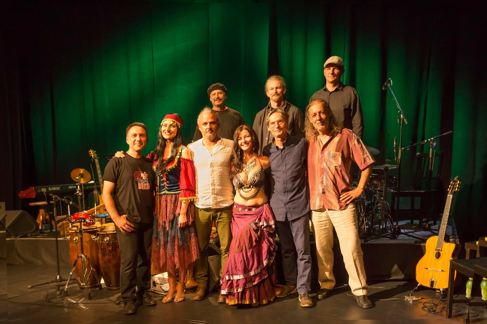
O nama
Muzika koja ruši granice, pokreće telo, dodiruje dušu.
Bogatstvo ritmova, melodija i tradicija Balkana čini osnovu raznovrsnog repertoara Ostbeatbenda.
Na repertoaru su romska muzika iz Srbije, Rumunije i Mađarske, bosanske i ukrajinske pesme, makedonske, bugarske i srpske tradicionalne melodije, kao i autorske kompozicije. Sve to bend oblikuje u sopstveni, živ i prepoznatljiv zvuk.
Uživo
Sledeći koncerti
Muzika
Repertoar
Odabrane numere
Djelem Djelem
Istice Danas
Jovano Jovance
Kako Se To Kaze
U Bioskopu
Oriental Cocek
Peto
Prolece
Zima
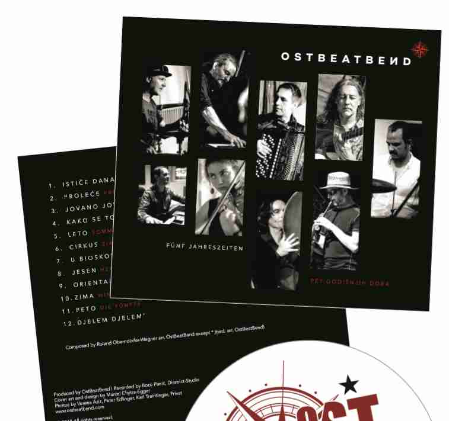
Članovi benda
Ostbeatbend je muzički kolektiv iz Salcburga čija muzika prevazilazi žanrovske, kulturne i jezičke granice. U njemu se susreću različita lična i muzička iskustva.
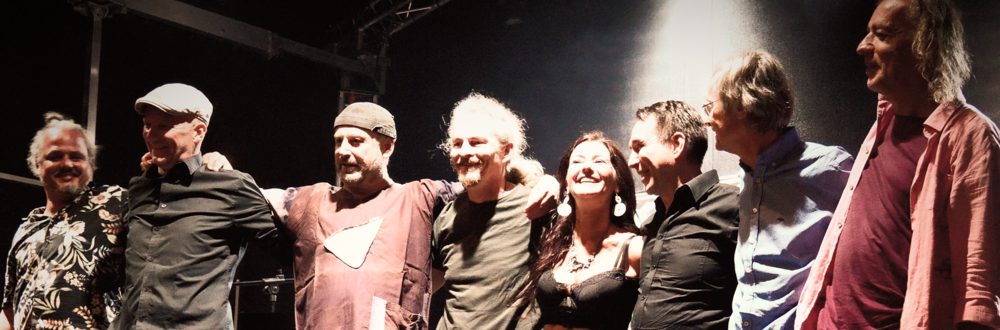
Članovi benda
Aktuelni sastav Ostbeatbenda.
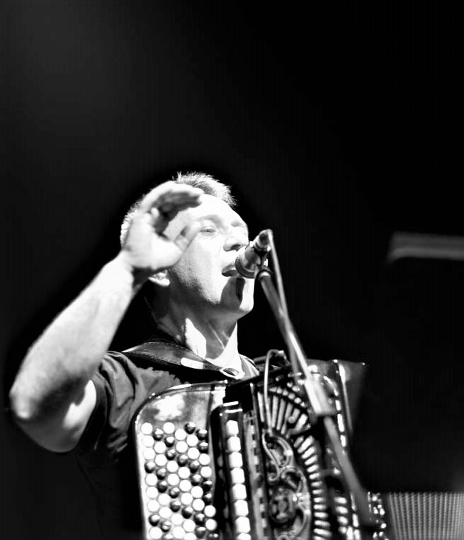
Slavoljub „Pera“ JeremićHarmonika / vokal
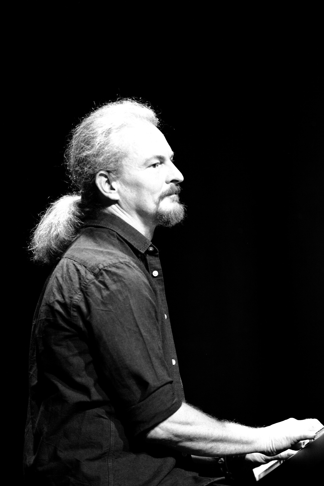
Roland Oberndorfer-WagnerKlavir / kompozicija

Michael „Michi“ BrandlGitara
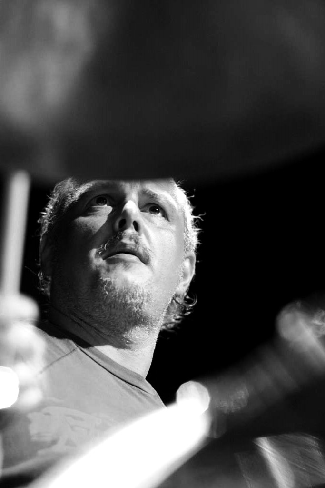
Marcel „Sal“ ChytraBubnjevi
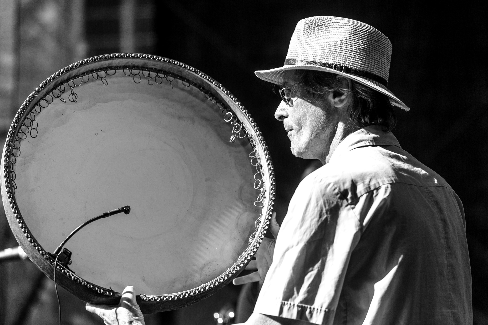
Georg DegenhardtPerkusije
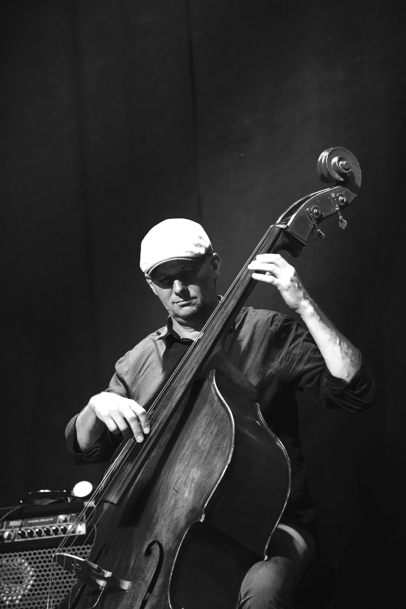
Peter FürhapterBas / saksofon
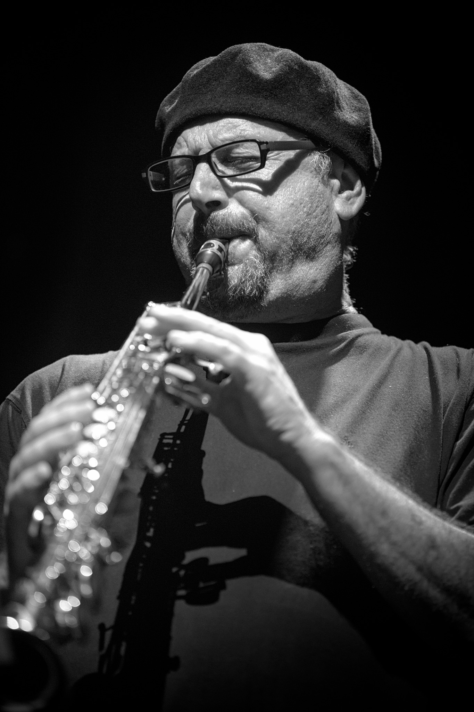
Robert FriedlKlarinet / saksofon

Verena AzizDugogodišnja umetnička saradnica / ples
Osnivači Ostbeatbend


Saradnici, gosti i prijatelji Ostbeatbenda


Mediji
Fotografije, muzika i video
Galerija fotografija


Video-snimci
Mediji
Organizatori i mediji
Logo, fotografije, tehnički rajder i tekstovi o bendu mogu se preuzeti pojedinačno ili kao jedinstven paket.
Kompletan medijski paket
Logo, tri fotografije benda i tekstovi o bendu objedinjeni su u jednoj ZIP datoteci.
Kratak tekst o bendu
Ostbeatbend na autentičan način spaja muzičko bogatstvo Balkana, autorsku muziku i savremene aranžmane. Srpski, rumunski, mađarski, bosanski, ukrajinski, makedonski i bugarski uticaji susreću se sa vatrenim ritmovima, virtuoznom svirkom, improvizacijom i snažnom scenskom energijom. Tako nastaje prepoznatljiv zvuk koji prevazilazi žanrovske i kulturne granice – živ, emotivan i neposredan.
Opširniji tekst o bendu
Raznovrsni ritmovi, melodije i tradicije Balkana čine temelj repertoara Ostbeatbenda. Romska muzika iz Srbije, Rumunije i Mađarske prepliće se sa bosanskim i ukrajinskim pesmama, makedonskim, bugarskim i srpskim melodijama, kao i sa autorskom muzikom i aranžmanima benda.
Bend je osnovao perkusionista Alexander „Aco“ Zechbauer, čija je ljubav prema muzičkoj raznolikosti Balkana snažno obeležila razvoj projekta. Aco je preminuo 2020. godine, ali njegova ideja nastavlja da živi. Ostbeatbend sebe doživljava kao muzički kolektiv koji prevazilazi granice – žanrovske, kulturne i jezičke – i u kojem se susreću različita lična i muzička iskustva.
Iz kreativnog zajedništva članova benda nastaje prepoznatljiv zvuk u kojem se prepliću balkanska muzika, world music, džez, improvizacija i savremeni uticaji – sa mnogo energije, emocije i iskrene radosti muziciranja. Tradicija ovde nije muzejski eksponat, već živa polazna tačka za muziku koja se razvija, menja i ostaje otvorena za nove susrete.
Logo
Preuzmi logo{kind=link}
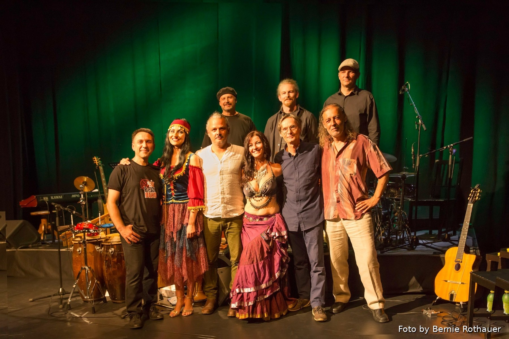
Fotografija benda 1
Otvori fotografiju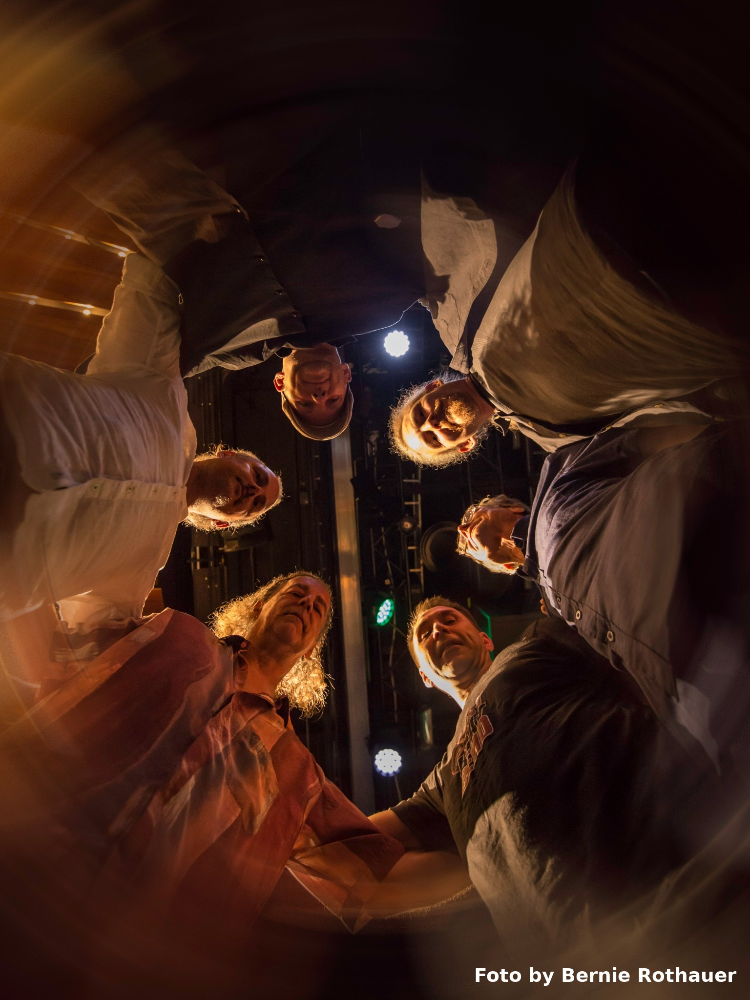
Fotografija benda 2
Otvori fotografiju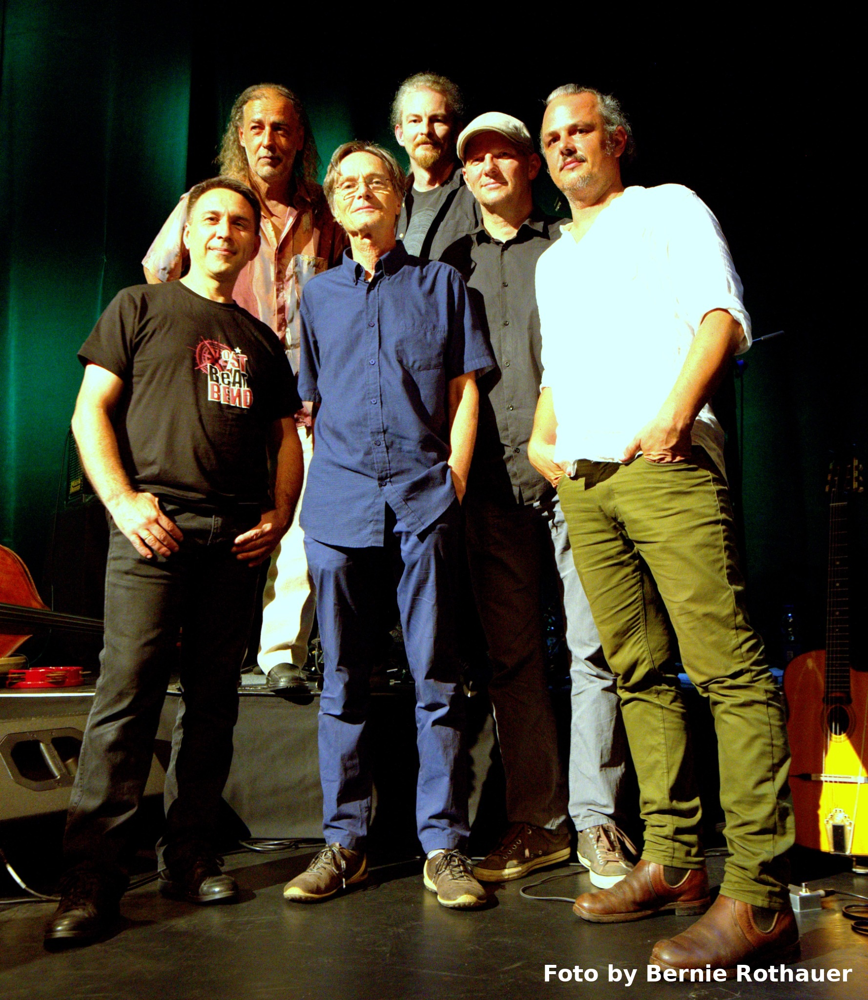
Fotografija benda 3
Otvori fotografiju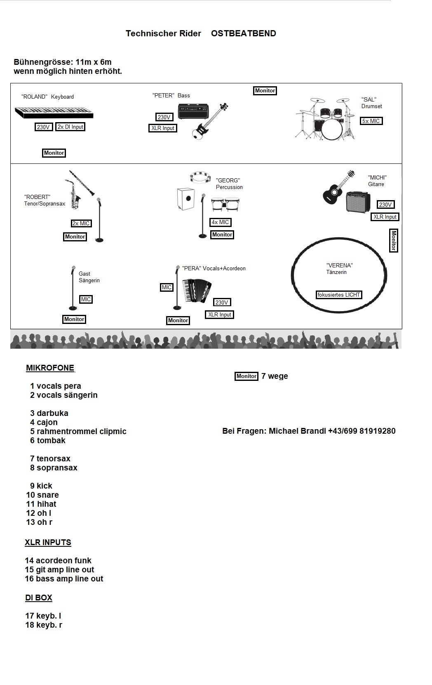
Tehnički rajder
Raspored na sceni i tehnički zahtevi benda.
{kind=link}
Kontakt
Koncerti i kontakti
Za koncertne nastupe, festivale, kulturne programe i druge upite.
E-pošta: ostbeatbend.salzburg@gmail.com
Sedište: Salcburg / Austrija
Društvene mreže i platforme
Pronađite nas onlajn
Pratite nas na Fejsbuku i Instagramu, a našu muziku poslušajte na Spotifaju.